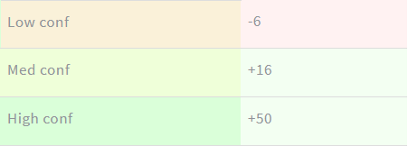

Example of using ROI:
Say you bet 1 coin on an event that we say we can predict accurately 75% of the time.
Your betting agency tells you that the odds of winning are 50%. This means that you win 2 coins.
If this happens 20 times, you're going to win 15 times (75%) and lose 5 times.
This means you have 15 * 2 - 5 * 1 = 25 coins. Your initial investment is 20 coins, so your profit is 5 (25%) . This is exactly your ROI (75% - 50% = 25%).
Example of using History:
First of all, it's important to note that the algorithm is subject to change. This means that accuracy may vary from week to week.
For that reason, I felt it was important to have a clear history of the predictions, focusing on the latest fixtures.
If you want to bet on a league, check the latest two weeks, for each confidence level. Get a feel of how well predictions is holing up.
Normally, I'm expecting accuracy to be constantly above 60%.
Example of using Betting notation:
This site uses standard betting 1X2 betting notation:
- 1 2 - home team/away team will win
- X - match will end in a draw
- combined (1X, X2) - home/away team will win or draw
- combined (12) - home or away team will win
- BTTS - both teams will score (a minimum of one goal)